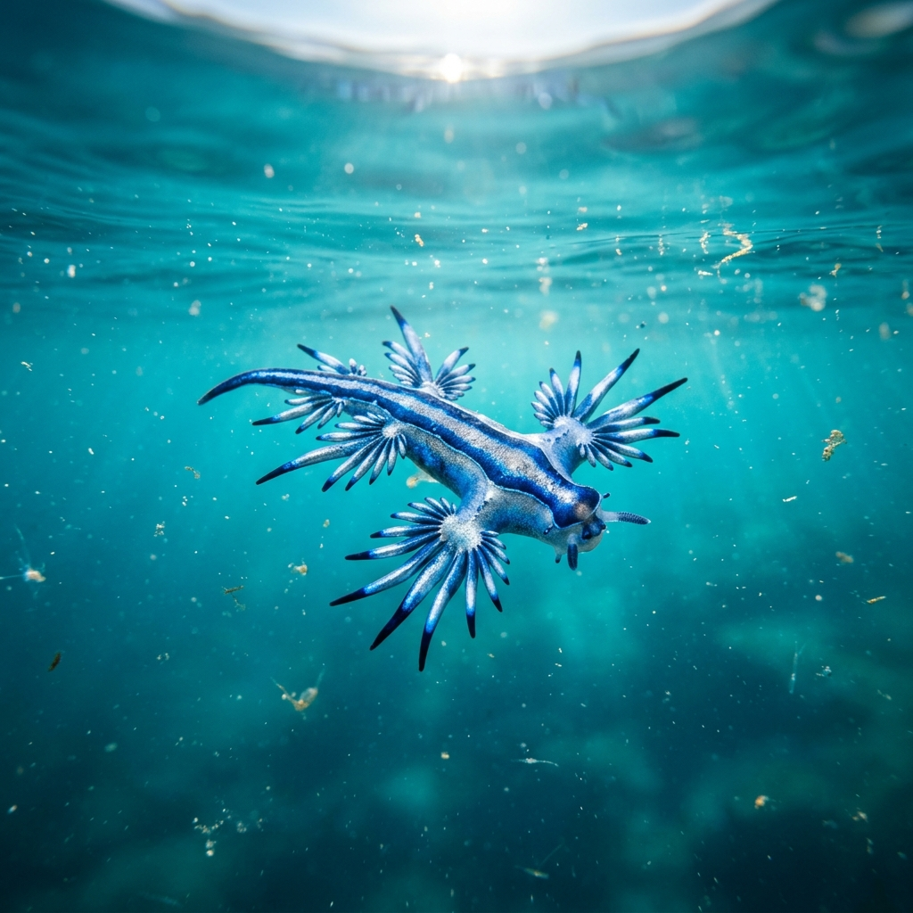

Our Story
"우리는 가장 아름다운 바다 생물인 푸른갯민숭달팽이에서 영감을 받았습니다. 그들의 유연함과 강인함, 그리고 압도적인 아름다움을 현대적인 감각으로 재해석합니다."
100%
Natural Inspiration
Deep
Ocean Origin

심해의 신비로운 푸른 빛을 머금은 천사, 푸른갯민숭달팽이의 세계로 당신을 초대합니다. 자연이 선사하는 가장 경이로운 예술을 직접 경험해 보세요.
자연이 빚어낸 완벽한 디자인과 생존의 미학
심해의 에메랄드와 은하수의 은빛이 조화롭게 어우러진 독보적인 컬러 패턴을 자랑합니다.
날개 같은 돌기를 이용해 파도를 타고 흐르는 우아한 움직임은 보는 이의 넋을 놓게 합니다.
작은 몸체에도 불구하고 강력한 보호 기작을 갖춘, 자연이 설계한 가장 완벽한 생명체입니다.

푸른갯민숭달팽이의 세밀한 돌기 하나하나에는 바다의 역사가 담겨 있습니다. 은빛 광택과 짙은 푸른색의 대비는 그 어떤 인공적인 예술품보다도 찬란합니다.
"우리는 가장 아름다운 바다 생물인 푸른갯민숭달팽이에서 영감을 받았습니다. 그들의 유연함과 강인함, 그리고 압도적인 아름다움을 현대적인 감각으로 재해석합니다."
푸른갯민숭달팽이에 대한 더 많은 정보와 소식을 가장 먼저 받아보세요.